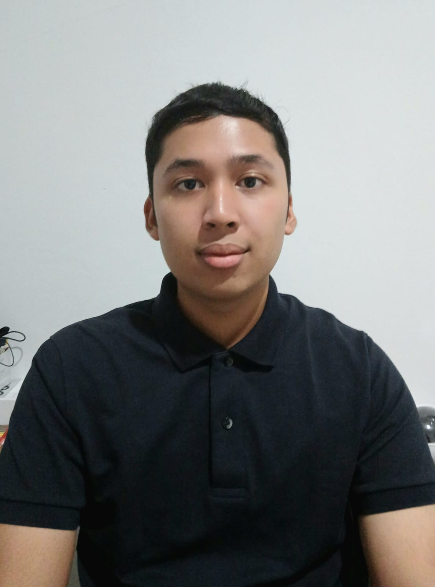

Hello! I am currently entering my sixth semester as an Information Systems student with a strong interest in technology, digital systems, and web development. I am particularly interested in how software solutions can be designed to improve efficiency and everyday user experiences.
Through my academic projects, I have gained hands-on experience in backend development, database integration, and building functional web applications. I enjoy learning new technologies, solving problems, and continuously improving my technical skills.
Outside of academics, I enjoy drawing, exploring animation and games, and working on small personal coding projects. These activities help me stay creative and balanced while continuing to grow as a developer.
👉 Feel free to explore my portfolio or download my CV. I’m actively seeking internship opportunities.